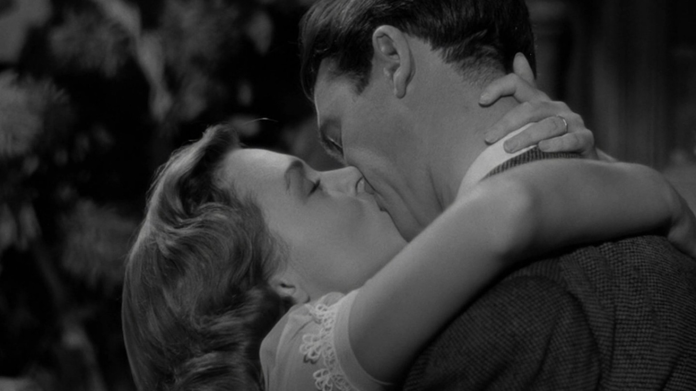
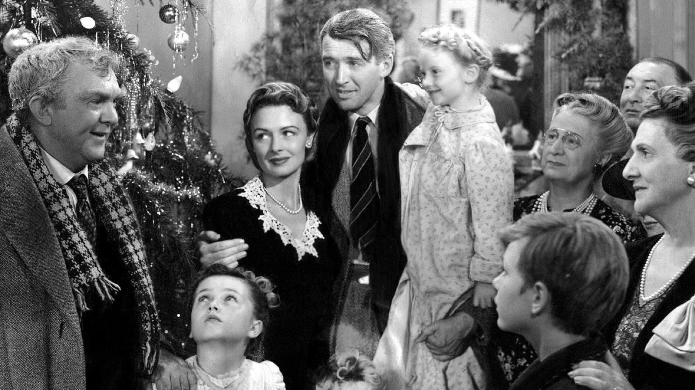

La vita è meravigliosa (1946): perché regge ancora
Il classico di Natale che nel 1947 fece perdere soldi allo studio. Eppure Capra e Stewart oggi ci sembrano più amari e più veri di quanto si pensi
La vita è meravigliosa (titolo originale It's a Wonderful Life) apre da generazioni le feste di Natale nelle case americane, ma nel 1947 fece perdere 525.000 dollari allo studio che lo aveva distribuito. È il paradosso più grande di questo classico: alla sua uscita, il 20 dicembre 1946, ricevette recensioni contrastanti e incassò 3,3 milioni di dollari, il 26° posto dell'anno. Però per andare in pari ne sarebbero serviti 6,3. Eppure oggi conosciamo a memoria quella neve, quel campanello, quella cittadina chiamata Bedford Falls.
Un racconto stampato per posta
Tutto comincia da un opuscolo. Lo scrittore Philip Van Doren Stern scrisse il racconto «The Greatest Gift» nel novembre 1939, ma non trovò un editore, quindi lo fece stampare in un opuscolo di 24 pagine e lo spedì a 200 persone come regalo di Natale del 1943. Nell'aprile 1944 la RKO ne comprò i diritti per 10.000 dollari. Alla fine ci pensò Frank Capra, che dopo il servizio militare aveva fondato la Liberty Films: fu la sua società a produrre il film, con un accordo di distribuzione con la RKO.
Il protagonista è George Bailey, uomo di provincia che ha sempre rimandato i propri sogni perché gli altri avevano bisogno di lui. Una notte di Natale George crede di aver perso tutto, allora un aiuto improbabile gli mostra come sarebbe andata la sua città senza di lui. Non diciamo altro, perché il film è più bello se lo guardi senza sapere come si arriva alla fine.

Bedford Falls, costruita a mano
Una parte del fascino sta nella cura quasi artigianale con cui fu messo in piedi il mondo del racconto. Le riprese durarono dal 15 aprile al 27 luglio 1946, circa 90 giorni di lavorazione, tra gli studi RKO di Culver City e il ranch di Encino. Proprio lì fu montata Bedford Falls: circa quattro acri, con una strada principale di 300 iarde su cui si affacciavano 75 tra negozi ed edifici. Quindi non è una scenografia da fondale: in quella città si cammina davvero, e il film se ne accorge, perché la macchina da presa ci passa in mezzo, ci rimane, ci fa riconoscere i volti.
Poi ci sono i fiocchi. Russell Shearman, responsabile degli effetti speciali della RKO, mise a punto una neve chimica a base di acqua e fiocchi di sapone, a cui aggiunse foamite e zucchero. Così il film evita il cotone delle cartoline, e l'inverno di Bedford Falls nasce da una ricetta.
Il conto, però, non tornava. Il budget era di circa 3,18 milioni di dollari, ma la soglia per non perdere denaro arrivava quasi al doppio, perché Capra aveva fatto costruire una città intera per una storia che il pubblico dell'epoca non sentì il bisogno di vedere. La guerra era appena finita, quindi un racconto sulla fatica di restare in provincia arrivava in anticipo o in ritardo, mai al momento giusto.
Il fallimento che l'ha reso immortale
La fama del film, invece, non si spiega con i cinema del 1946. Ottenne cinque candidature all'Oscar, tra cui miglior film e miglior attore, ma le perse tutte contro I migliori anni della nostra vita, un altro racconto sul ritorno a casa dalla guerra. Poi arrivò un errore burocratico: nel 1974 il copyright non fu rinnovato e l'opera entrò nel pubblico dominio. Allora le televisioni americane potevano trasmetterla senza pagare diritti, e dal 1976 lo fecero ogni dicembre, finché diventò un'abitudine nazionale.
La consacrazione ufficiale arrivò dopo. Nel 1990 il film entrò nel National Film Registry. Nella classifica dell'American Film Institute del 1998 era 11°, mentre nella versione del 2007 scese al 20° posto, però risultò primo nell'elenco AFI dei film americani più ispiratori. È quindi un successo nato dopo il fallimento, perché gli spettatori lo scelsero quando nessuno glielo imponeva.
Come regge oggi
Visto adesso, il film convince per una ragione che non è la più citata. La parte natalizia, quella che tutti ricordano, occupa pochi minuti. Invece il resto, quasi due ore, racconta la fatica di restare nel posto in cui si è cresciuti e di accontentarsi di un'esistenza più piccola di quella sognata. James Stewart tornava sul set dopo la guerra, e nel volto di George c'è una stanchezza che non sembra recitata. Quando si arrabbia con la sua famiglia diventa perfino sgradevole, ma proprio questo ci dice che il racconto tiene davvero a lui.
È una posizione nostra, e la dichiariamo: il lieto fine funziona perché il secondo atto è molto più cupo di come lo ricordiamo. Chi lo conosce solo come film da divano con la cioccolata calda scoprirà un dramma di provincia, con scene di disperazione che reggono il confronto con il cinema americano del dopoguerra. Il rischio, semmai, è l'eccesso di buoni sentimenti nell'ultima mezz'ora, che nel 2026 qualcuno giudicherà troppo dolce. Per noi però è un prezzo giusto da pagare, perché quella dolcezza Capra se l'è guadagnata.
Dove vederlo e a chi lo consigliamo
A ottobre 2026 il film non è in streaming in abbonamento in Italia, ma puoi noleggiarlo su Apple TV Store o su Rakuten TV, oppure su Amazon Video o CHILI. La disponibilità cambia spesso, quindi conviene controllare prima di scegliere. Da noi uscì nel 1948, distribuito da G.D.B.
Lo consigliamo a chi ama il cinema classico e non l'ha mai visto per intero, ma anche a chi da bambino lo ha visto a pezzi in televisione e non ricorda più com'era davvero. Vale per i grandi più che per i piccoli, perché la malinconia di George è un tema da adulti. Allora lasciagli i suoi 129 minuti in una sera di fine novembre, quando l'inverno sta per arrivare.
Domande frequenti
Quando uscì La vita è meravigliosa?
Negli Stati Uniti il 20 dicembre 1946; in Italia nel 1948, distribuito da G.D.B.
Quanto dura il film?
129 minuti.
Dove si può vedere in Italia?
A ottobre 2026 solo a noleggio: su Apple TV Store o Rakuten TV, oppure su Amazon Video o CHILI.